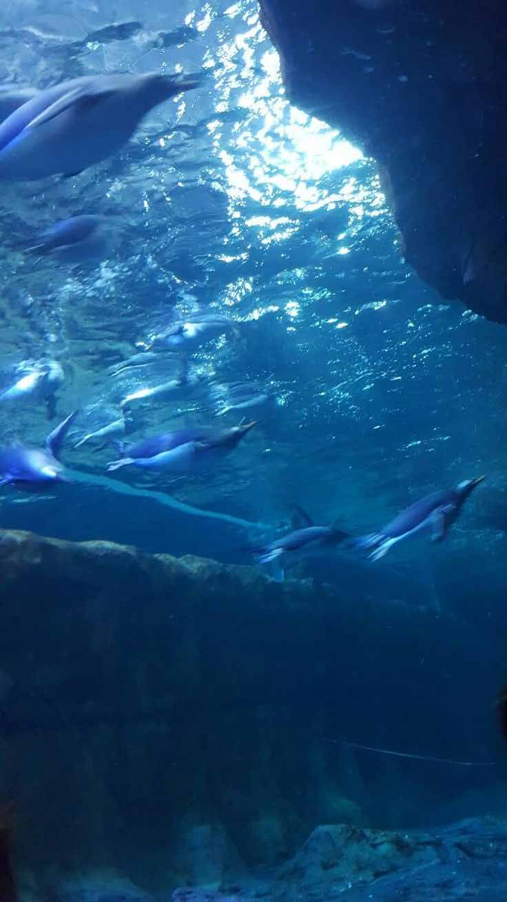

The Researcher
Think tank · Strategic thinking · Futures research
The Blue Hub is the core of strategic thinking and interdisciplinary research within The Blue Maker, Florencia’s ecosystem for research, design and innovation.
Her academic specialisation in Neuroarchitecture, Cognitive Neuroscience & Environmental Psychology (INESEM, Granada, 2023–24) sits alongside a Customer Experience Management certification (FIU, Florida International University, 2016–17) and three decades of applied research at FADU‑UBA.

Framework research project
Colour · Perception · Space · Wellbeing · Longevity
The ecosystem that integrates all of her lines of work.
The core of strategic thinking and interdisciplinary research.
The central agenda that organises the research projects. The individual projects will be added here.
Selected Papers & Congresses
Media
Florencia contributes to public dissemination and media through articles and columns addressing contemporary trends in wellbeing and the built environment, presenting publications, academic papers, conferences and articles through national and international platforms.